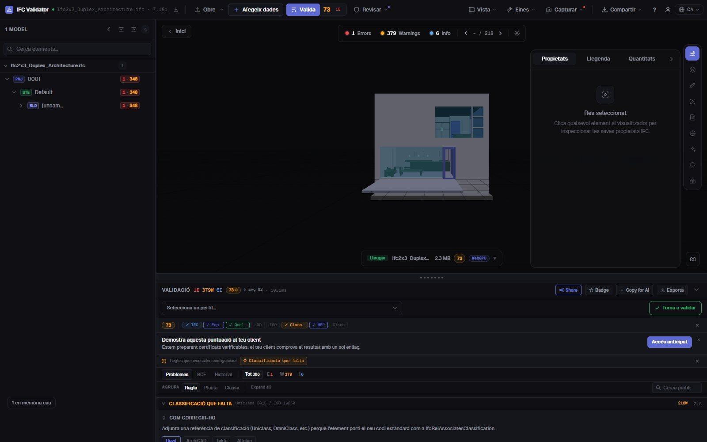
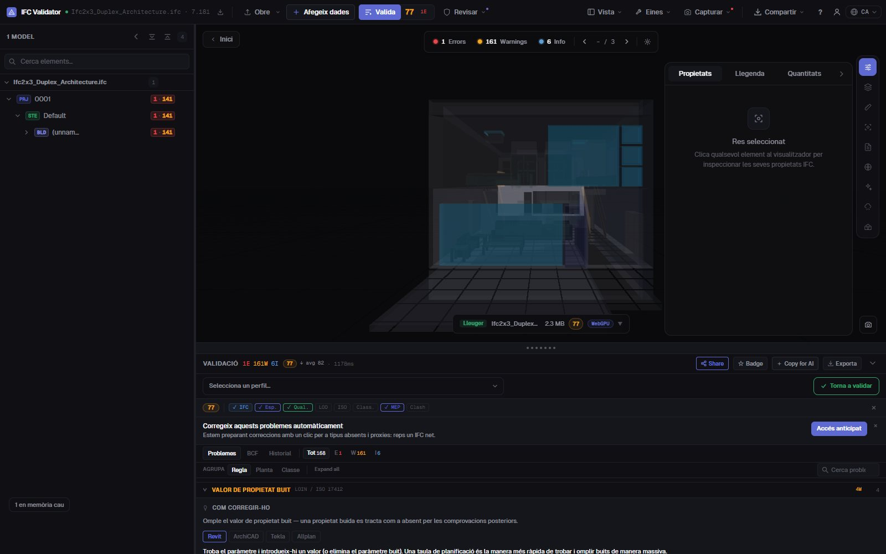

Comprovar la classificació IFC
Uniclass, OmniClass, Psets
Troba cada element d’un IFC sense referència de classificació —de qualsevol sistema o només dels que exigeix el teu Pla d’Execució BIM— juntament amb conjunts de propietats que falten, valors buits i noms fora de la convenció. Cada troballa es llista, es compta i es mostra en 3D.
Comprovar la classificació — gratis →Sense compte · Sense pujar res · Al teu navegador · Gratis

Què pots fer
Comprovacions de classificació i dades per a un lliurament
El que revisa un coordinador BIM abans d’acceptar un model al CDE.
Classificació absent
Cada element físic sense IfcClassificationReference, de qualsevol sistema o només dels que indiquis (Uniclass 2015, OmniClass, CCS, NL-SfB…).
Classificació per IDS
Carrega un fitxer IDS de buildingSMART per exigir un sistema i un codi per tipus d’element; la faceta de classificació d’IDS està totalment suportada.
Validació de Psets
Conjunts de propietats obligatoris que falten i propietats amb valor buit, per classe d’element.
Convenció de noms
Compara els noms amb els patrons del teu BEP, a més de noms buits i duplicats (reanomenables en bloc).
Visible en 3D
Aïlla al model els elements que fallen qualsevol comprovació, amb la resta en transparència, i salta a cadascun.
Exportable
Envia les troballes en BCF a l’autor, o descarrega un CSV, un informe JSON o un informe de lliurament imprimible.
Captures

Preguntes
Preguntes freqüents
Com comprovo la classificació d’un model IFC?
Obre l’IFC a IFC Viewer Online i valida amb la regla de classificació activa (els perfils ISO 19650 i de coordinació la inclouen). Llista cada element sense referència de classificació i els mostra en 3D. Per exigir un sistema i un codi per tipus d’element, carrega un fitxer IDS.
Quins sistemes de classificació admet?
Qualsevol desat com a IfcClassification / IfcClassificationReference: Uniclass 2015, OmniClass, CCS, NL-SfB, CoClass, MasterFormat o el teu propi. Pots acceptar qualsevol sistema o només els que indiquis.
També valida conjunts de propietats?
Sí. Hi ha regles per a Psets obligatoris que falten i valors buits, i un IDS pot exigir propietats, tipus de dades i valors concrets.
Es puja el model?
No. La comprovació s’executa al navegador amb WebAssembly; l’IFC no surt del teu ordinador. Gratis per a qualsevol ús, sense compte.
Puc compartir els resultats amb l’autor del model?
Sí: exporta en BCF 2.1 per a la seva eina, en CSV o JSON, o com a informe de lliurament imprimible.
Sàpigues què està sense classificar abans que el model arribi al CDE.
Classificació · Psets · Noms · IDS · BCF
Comprovar la classificació — gratis →